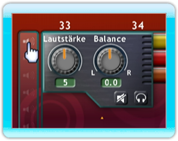

15 |
Audio Einstellungen |
 |
|

Um die Lautstärke eines einzelnen Loops einzustellen, halten Sie den Cursor über den Loop und drücken Sie den B-Knopf. Die Audio-Einstellungen erscheinen, mit denen Sie die Lautstärke von 1-10 und die Balance nach rechts oder links einstellen können. Mehrere Loops lassen sich auch einstellen, indem Sie sie markieren, den B-Knopf drücken und die Lautstärke oder Balance einstellen.
Um die Lautstärke des ganzen Titels einzustellen, drücken Sie auf das ‘Titel Lautsprecher’-Symbol auf der linken Seite des Arranger-Bildschirms mit dem A-Knopf, um somit die Audio Einstellungen aufzurufen.
Titel Stummschalten
|
 Einzelne Titel
Einzelne Titel |
 |
 |